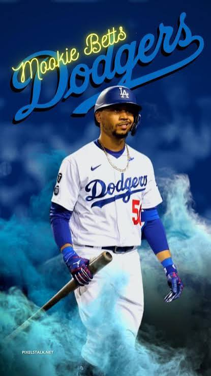

Markus Lynn "Mookie" Betts (born October 7, 1992) is an American professional baseball star for the Los Angeles Dodgers. He is a 4-time World Series champion, an AL MVP (2018), and a multi-positional phenomenon
